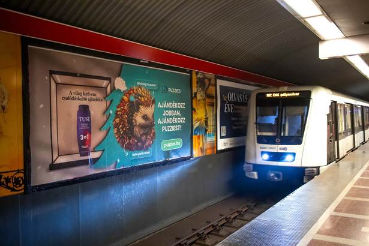

Puzzies Hungary · 2025 · Senior Social Strategist
Karácsonyi kampány, amely megduplázta a rendeléseket
15 000 → 30 000
online rendelés a 2 hónapos szezonban
A 2025-ös karácsonyi kampányt vezettem a stratégiától a riportig, egy 7 fős csapattal, amelyet egy saját Notion-rendszerben irányítottam. 70 social videó 4 platformon, 59 köztéri és plázamegjelenés, 10 televíziós megjelenés, 4 PR-cikk és influencerek.
A 3 hetes fő kampányszakaszban a videók 4 millió megtekintést és 100 000 interakciót hoztak.
A teljes esettanulmány →